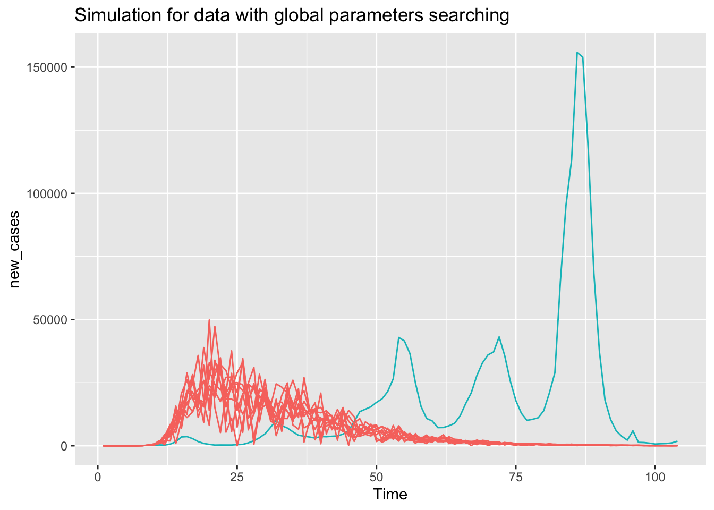

Code
# plot the time-series
ggplot(covid_japan_week, aes(x = date, y = new_cases)) +
xlab("Date")+
ylab("Cases")+
ggtitle("Japan Covid Reports")+
geom_line(col = "aquamarine3")The outbreak of COVID-19 since late 2019 has posed unprecedented challenges to global public health systems and societal well-being. Among the affected regions, Japan stands as a notable case study due to its unique socio-demographic characteristics, healthcare infrastructure, and governmental response strategies. According to JHU [1], by far the COVID-19 has caused total cases of 33,329,551 and total deaths of 73,046.
In this study, we aim to explore the temporal dynamics of COVID-19 report cases time series in Japan using a combination of two distinct yet complementary modeling approaches: Autoregressive Moving Average (ARMA [2]) models and Susceptible-Exposed-Infectious-Recovered (SIR/SEIR [3]) compartmental models.
The dataset comes from this github website [4], whose cases and deaths are collected from World Health Organization Coronavirus Dashboard [5]. This dataset is weekly based and we filtered out the data from Japan sorted by time. In the end, we got a time series of 222 observations from 2020-01-05 to 2024-03-31.
# plot the time-series
ggplot(covid_japan_week, aes(x = date, y = new_cases)) +
xlab("Date")+
ylab("Cases")+
ggtitle("Japan Covid Reports")+
geom_line(col = "aquamarine3")The time series plot clearly illustrates three distinct outbreaks of COVID-19 cases: one in early 2022, another in mid to late 2022, and a third towards the end of the same year. It is important to note that this time series reflects a complex interplay of societal, political, and behavioral factors, which are challenging to fully incorporate into our analysis. Therefore, this study focuses solely on utilizing time series models to fit the original data and optimize numerical procedures to achieve maximum likelihood and optimal simulation outcomes. The emphasis lies on numerical accuracy rather than delving deeply into the underlying factors driving the data.
Firstly, we explore this time series with ARMA model.
covid.ts <- ts(data=covid_japan_week$new_cases,start=c(2020,1),frequency=52,names=c('cases'))par(mfrow = c(1,2))
# ACF and PACF
acf(covid.ts, lag = 48, main = "ACF Plot of Covid in Japan")
pacf(covid.ts, lag = 48, main = "PACF Plot of Covid in Japan")Looking at the ACF and PACF [6] plot of the time series, we can observe a significant oscillation, which might suggest a periodicity pattern in it. To further investigate it, we do the spectrum analysis [7] below:
# spectrum analysis
# smoothed periodogram
spectrum_s <- spectrum(covid.ts, spans = c(4,6,4), main = "Smoothed periodogram")
abline(v = spectrum_s$freq[which.max(spectrum_s$spec)], lty = "dotted")spectrum_s$freq[which.max(spectrum_s$spec)][1] 0.2311111Since the frequency is \(0.2311111\text{ week}^{-1}\), thus the period is \(4.326923\text{ week}\). This means that a seasonal pattern with the period to be a month is appropriate. Besides, from the time series there seems not to be a clear trend so we do not use integration in ARMA fitting.
We define the SARIMA [8] model equation below:
Then SARIMA model equation can be represented as:
\[ \varphi(B)\Phi(B^{12})(Y_n - u) = \psi(B)\Psi(B^{12})\epsilon_{n} \]
Now our final setting is SARIMA(p,0,q)\(\times\)(1,0,1) where \(0\leq p,q \leq 5\). We calculate the AIC tables as follows:(the code is from slides 5 in class [9])
# AIC table
aic_table1 <- function(data,P,Q,sp,sq){
table <- matrix(NA,(P+1),(Q+1))
for(p in 0:P) {
for(q in 0:Q) {
table[p+1,q+1] <- tryCatch( {Arima(data, order=c(p,0,q), seasonal = list(order=c(sp,0,sq), period = 4),method = "ML")$aic}, error = function(e){return(NA)})
}
}
dimnames(table) <- list(paste("AR",0:P, sep=""),
paste("MA",0:Q,sep=""))
table
}
covid_aic_table <- aic_table1(covid.ts,5,5,1,1)
kable(covid_aic_table, caption = paste("AIC of SARIMA(p,0,q),(1,0,1), where p,q are from 0 to 5"), digits=2)| MA0 | MA1 | MA2 | MA3 | MA4 | MA5 | |
|---|---|---|---|---|---|---|
| AR0 | 6075.74 | 5846.13 | 5784.56 | 5648.49 | 5628.62 | 5606.50 |
| AR1 | 5661.20 | 5631.18 | 5611.10 | 5595.27 | 5595.67 | 5572.36 |
| AR2 | 5603.93 | 5611.29 | 5584.22 | 5581.51 | 5581.85 | 5574.00 |
| AR3 | 5585.94 | 5589.80 | 5590.99 | 5578.80 | 5589.95 | 5574.53 |
| AR4 | 5585.34 | 5584.49 | 5592.51 | 5588.73 | 5582.41 | 5568.65 |
| AR5 | 5587.03 | 5586.25 | 5584.17 | 5571.77 | 5585.04 | NA |
To achieve lower AIC value as well as keep the model relatively simple, we finally choose the model to be SARIMA(1,0,5)\(\times\)(1,0,1). Then we check the stationarity of the model and do some diagnostics.
# model diagnostics
sarima_model <- Arima(covid.ts, order=c(1, 0, 5), seasonal=list(order=c(1, 0, 1), period=4))
# plot roots
autoplot(sarima_model)# check residuals
checkresiduals(sarima_model)
Ljung-Box test
data: Residuals from ARIMA(1,0,5)(1,0,1)[4] with non-zero mean
Q* = 54.688, df = 36, p-value = 0.02372
Model df: 8. Total lags used: 44As we can see, the inverse AR and MA roots are all inside the unit circle, which means the ARMA is both stationary and causal. The Ljung-Box test and residual ACF plot show that there’s correlation between the residual in the model, which kind of violates the model assumption. However, the residual histogram shows a nearly normal distribution. Finally we show plots of how well ARMA model fits and also do some forecast.
# fitted and prediction
# fitted
p1 <- ggplot(covid_japan_week, aes(x = date, y = new_cases)) +
xlab("Date")+
ylab("cases")+
ggtitle("fitted vs. original")+
geom_line(data = covid_japan_week, aes(colour = "Original data"))+
geom_line(y = fitted(sarima_model), linetype = 2, aes(colour = "SARMA fit"))+
scale_colour_manual(name="Legend", values=c("aquamarine3","coral1"))
# forecast
p2 <- autoplot(forecast::forecast(sarima_model, h=10), main = "forecast", ylab = "Cases", xlab = "Date")
p1 / p2We have chosen to implement the SEIR model to simulate the COVID-19 outbreak because it accounts for the incubation period that is known to occur with COVID-19. This model introduces an ‘E’ stage, standing for ‘exposed’, indicating that individuals go through a latency period before they can infect others. This makes the SEIR model more practical in comparison to the SIR model, which does not consider this latency period.

In the flowchart, each arrow represents a specific rate of transition between the stages of the SEIR model. The stages are defined as:
The contact rate is denoted by \(\beta\), and the rate at which susceptible individuals become exposed is given by \(\mu_{SI} = \beta I(t)\). The transition from exposed to infectious is represented by \(\mu_{EI}\), and the rate at which infectious individuals recover or are removed is \(\mu_{IR}\). The likelihood of a case being officially reported is represented by \(\rho\).
The calculations for the number of individuals in each compartment are as follows:
The transitions \(\Delta N_{SE}\), \(\Delta N_{EI}\), and \(\Delta N_{IR}\) are modeled using binomial distributions with the respective probabilities being calculated as follows:
For our measurement model, we use a discretized normal distribution truncated at zero for the reported cases:
\(\text{Cases} = \max\{\text{round}(C_n), 0\}\)
where \(C_n\) is drawn from \(N(\rho H_n, (\tau H_n)^2 + \rho H_n)\), with \(H\) tracking the number of individuals moving from I to R.
To simplify the demographic factors in our model, we assume the birth rate, death rate, and population movement to be zero, thereby considering the total population \(N = S + E + I + R\) as constant. Furthermore, our data, visualized in the previous section, show several outbreaks, whereas traditional SEIR models typically describe scenarios with only one peak.
Consequently, we introduce a time-dependent contact rate (\(\beta\)) [10], allowing it to vary throughout the epidemic’s course. This variation is implemented as a step function, reflecting our exploratory data analysis (EDA) findings that the contact rate changes as the epidemic progresses.
To reflect the dynamic nature of public behavior towards the COVID-19 virus in Japan, our model incorporates a step function for the contact rate (\(\beta\)), aligned with significant events that likely influenced social interactions and mobility. These events are used as the breakpoints for the changes in \(\beta\), and each period represents a distinct phase in the epidemic’s timeline as related to these key events:
\[ \beta = \begin{cases} b_1, & \text{01/01/2020 - 25/05/2020 (Start of the pandemic to the lifting of the state of emergency)} \\ b_2, & \text{26/05/2020 - 17/02/2021 (Post-emergency period to the beginning of vaccination)} \\ b_3, & \text{18/02/2021 - 23/07/2021 (Vaccination rollout to the day before the Tokyo Olympics)} \\ b_4, & \text{24/07/2021 - 31/12/2021 (During and after the Tokyo Olympics)} \\ \end{cases} \]
Due to the emergence of the Omicron variant on Nov 30, 2021 [14], which has different transmission characteristics, we will only use data up to 31/12/2021 to avoid confounding the analysis with a different pattern of infection.
These breakpoints were chosen based on the assumption that public health directives and major societal events significantly impact the population’s contact patterns, which are crucial for modeling the spread of the virus.
suppressPackageStartupMessages({
library(pomp)
})
seir_step = Csnippet("
double Beta;
if(intervention == 1) Beta = b1;
else if(intervention == 2) Beta = b2;
else if(intervention == 3) Beta = b3;
else Beta = b4;
double dN_SE = rbinom(S, 1 - exp(-Beta * I / N * dt));
double dN_EI = rbinom(E, 1 - exp(-mu_EI * dt));
double dN_IR = rbinom(I, 1 - exp(-mu_IR * dt));
S -= dN_SE;
E += dN_SE - dN_EI;
I += dN_EI - dN_IR;
H += dN_IR;
")
seir_rinit = Csnippet("
S = nearbyint(eta * N);
E = 100;
I = 200;
H = 0;
")
dmeas <- Csnippet("
double tol=1.0e-25;
double mean =rho*H;
double sd =sqrt(pow(tau*H,2)+rho*H);
if(new_cases>0.0){
lik=pnorm(new_cases+0.5,mean,sd,1,0)-pnorm(new_cases-0.5,mean,sd,1,0)+tol;
} else {
lik=pnorm(new_cases+0.5,mean,sd,1,0)+tol;
}
if(give_log) lik=log(lik);
")
rmeas <- Csnippet("
new_cases = rnorm(rho*H, sqrt(pow(tau*H,2)+rho*H));
if(new_cases>0.0){
new_cases=nearbyint(new_cases);
} else {
new_cases=0.0;
}
")
covid_japan_week_20_21 <- covid_japan_week %>% filter(date<"2021-12-31") %>% mutate(Time = row_number())
seir_covar <- covariate_table(
t = covid_japan_week_20_21$Time,
intervention = c(rep(1, 21),
rep(2, 38),
rep(3, 23),
rep(4, 22)),
times = "t")
covidSEIR = covid_japan_week_20_21 %>% select(Time, new_cases) %>%
pomp(
times = "Time", t0 = 1,
rprocess = euler(seir_step, delta.t = 1),
rinit = seir_rinit,
rmeasure = rmeas,
dmeasure = dmeas,
accumvars = "H",
partrans=parameter_trans(
log = c("mu_EI", "mu_IR", "tau", "b1", "b2", "b3", "b4"),
logit = c("rho", "eta")
),
statenames = c("S", "E", "I", "H"),
paramnames = c("b1", "b2", "b3", "b4", "mu_EI", "mu_IR",
"eta", "rho", "N", "tau"),
covar = seir_covar
)Japan’s population for the year 2020 was reported to be 126,226,568[15]. Consistent with our prior assumptions, we shall maintain \(N\) as a constant value at 126,226,568. According to the Centers for Disease Control and Prevention (CDC)[16], the incubation period for corona viruses is at 6.5 days by average. Therefore, we anticipate that the transition rate from exposed to infectious (\(\mu_{EI}\)) will be \(\frac{1}{6.5 \text{ days}} = 0.15 \text{ day}^{-1}\).
Recovery from COVID-19 typically takes a minimum of two weeks, with emerging research indicating that most adults with mild to moderate symptoms cease to be infectious approximately 10 days after symptoms manifest. [17] Consequently, the rate at which infectious individuals recover or are removed (\(\mu_{IR}\)) is estimated to be around \(0.1 \text{ day}^{-1}\). We have decided to set both \(\mu_{EI}\) and \(\mu_{IR}\) at 0.1, fixing these values for both local and global searches.
Utilizing this information, we conducted several simulations with varied parameters. The results suggest the following set of parameters as suitable initial values for our local search:
\[ \begin{cases} b_1 = 1, b_2 = 10, b_3 = 20, b_4 = 18 \\ \mu_{EI} = 0.1, \mu_{IR} = 0.1 \\ \rho = 0.4 \\ \eta = 0.09 \\ \tau = 0.05 \\ N = 126,226,568 \\ \end{cases} \]
params = c(b1 = 1, b2 = 10, b3 = 20, b4 = 18,
mu_EI = 0.1, mu_IR = 0.1, rho = 0.4, eta = 0.09,
tau = 0.05, N = 126226568)
fixed_params = params[c("N", "mu_EI", "mu_IR")]
params_rw.sd = rw_sd(b1 = 0.02, b2 = 0.02, b3 = 0.02, b4 = 0.02,
rho = 0.02, tau = 0.0001, eta = ivp(0.02))registerDoRNG(2289432)
bake(file = "lik_starting_vals.rds", {
foreach(i=1:10, .combine = c) %dopar% {
covidSEIR %>% pfilter(params=params, Np=500)
}
}) -> pf
pf %>% logLik() %>% logmeanexp(se = TRUE) est se
-4219.645321 2.084666 we obtain an unbiased likelihood estimate of -4219.65 with a Monte Carlo standard error of 2.08.
plot_simulation = function(sim_dat) {
sim_dat %>%
ggplot() +
theme_bw() +
geom_line(aes(Time, new_cases, group = .id,
color = (.id == "data"), alpha = (.id == "data"),
linetype = (.id == "data"))) +
scale_color_manual(values = c("aquamarine3", "coral1")) +
scale_alpha_manual(values = c(0.5, 1)) +
scale_linetype_manual(values = c(5, 1)) +
guides(color = FALSE, linetype = FALSE, alpha = FALSE)
} # plot_simulation()
covidSEIR %>%
simulate(params = params, nsim = 20, format = "data.frame", include.data = TRUE) %>%
plot_simulation()Based on the initial parameters, the simulations detect the trend of the biggest peak, but still be not able to capture the other major outbreaks.
we use iterative filtering to do local search for the maximum likelihood estimates (MLE), starting from the initial settings. From the trace plot we can see that the log likelihood values show improvement as the iterations progress, suggesting that the model fit to the data is improving. The convergence of lines towards the latter iterations indicates that the model is approaching an optimal solution.
The trends on b1, b2, b3 and rho seem to be stabilizing and show small variation as the iterations progress. However, for b4, eta and tau, there are still some variability, indicating potential uncertainty in these estimates or more iterations may be needed for convergence.
run_id = 1
registerDoRNG(92375912)
bake(file = "local_search.rds", {
foreach(i = 1:10, .combine = c) %dopar% {
suppressPackageStartupMessages({
library(tidyverse)
library(pomp)
})
covidSEIR %>%
mif2(
params = params,
Np = 10000, Nmif = 50,
cooling.fraction.50 = 0.5,
rw.sd = params_rw.sd
)
} -> mifs_local
attr(mifs_local,"ncpu") <- getDoParWorkers()
mifs_local
}) -> mifs_local
mifs_local %>%
traces() %>%
melt() %>%
ggplot(aes(x = iteration, y = value, group = .L1, color = factor(.L1))) +
theme_bw() +
geom_line() +
guides(color = FALSE) +
facet_wrap(~name, scales = "free_y")registerDoRNG(120242857)
bake(file = "local_profile.rds", {
foreach(mf = mifs_local, .combine = rbind) %dopar% {
suppressPackageStartupMessages({
library(tidyverse)
library(pomp)
})
ll = replicate(200, logLik(pfilter(mf, Np = 10000))) %>%
logmeanexp(se = TRUE)
coef(mf) %>% bind_rows() %>% bind_cols(loglik = ll[1], loglik.se = ll[2])
} -> results
attr(results,"ncpu") <- getDoParWorkers()
results
}) -> results
results %>% arrange(-loglik) %>% head %>%
knitr::kable(digits = 3, caption = "Local search results with the Best Likelihood Values")| b1 | b2 | b3 | b4 | mu_EI | mu_IR | rho | eta | tau | N | loglik | loglik.se |
|---|---|---|---|---|---|---|---|---|---|---|---|
| 54.321 | 1766.945 | 16.463 | 29.800 | 0.1 | 0.1 | 0.173 | 0.139 | 0.050 | 126226568 | -2205.946 | 0.032 |
| 62.045 | 2175.460 | 4.302 | 7.637 | 0.1 | 0.1 | 0.185 | 0.131 | 0.050 | 126226568 | -2299.570 | 0.950 |
| 60.369 | 181.930 | 123.445 | 23.589 | 0.1 | 0.1 | 0.165 | 0.119 | 0.050 | 126226568 | -2308.611 | 0.025 |
| 61.695 | 292.057 | 15.867 | 37.660 | 0.1 | 0.1 | 0.180 | 0.114 | 0.050 | 126226568 | -2340.525 | 0.032 |
| 67.441 | 336.338 | 8.327 | 10.919 | 0.1 | 0.1 | 0.192 | 0.111 | 0.050 | 126226568 | -2394.975 | 1.101 |
| 68.673 | 104.798 | 7.416 | 6.860 | 0.1 | 0.1 | 0.196 | 0.106 | 0.051 | 126226568 | -2429.050 | 0.021 |
pairs(~loglik + b1 + b2 + b3 + b4 + eta + rho + tau, data = results, pch = 16)From the result table and pair-wise scatter plot above, we can see that among the top likelihood values, the probable parameter settings are around the following:
\[ \begin{cases} b_1 \in [50,75], b_2 \in [100,300], b_3 \in [0,25], b_4 \in [0,30]\\ \mu_{EI} = 0.1, \mu_{IR} = 0.1 \\ \rho \in [0.0,0.3], \eta \in [0.0,0.3], \tau \in [0,0.06] \\ N = 126,226,568 \\ \end{cases} \]
Based on the result of local search, we will perform a global search from multiple starting points, using a multi-stage iterative filtering process. Compared to normal iterative filtering process, the iteration time is longer and the disturbance amplitude is lower. We randomly draw 500 sets of starting values from the parameters that around the major trend in the trace plots in local research part that we mentioned above.
run_id = 2
set.seed(2062379496)
guesses = runif_design(
lower = c(b1 = 50, b2 = 100, b3 = 0, b4 = 0,
rho = 0, eta = 0, tau = 0),
upper = c(b1 = 75, b2 = 300, b3 = 25, b4 = 30,
rho = 0.3, eta = 0.3, tau = 0.006),
nseq = 500
)
mf1 = mifs_local[[1]]
bake(file = "global_search_1.rds",{
registerDoRNG(1270401374)
foreach(guess=iter(guesses, "row"), .combine = rbind) %dopar% {
suppressPackageStartupMessages({
library(tidyverse)
library(pomp)
})
mf = mf1 %>% # cooling.fraction.50 = 0.5
mif2(params = c(unlist(guess), fixed_params), Nmif = 10) %>%
mif2(Nmif = 2) %>%
mif2(Nmif = 2)
mf = mf %>%
mif2(Nmif = 2, cooling.fraction.50 = 0.3) %>%
mif2(Nmif = 2, cooling.fraction.50 = 0.3) %>%
mif2(Nmif = 2, cooling.fraction.50 = 0.1) %>%
mif2(Nmif = 2, cooling.fraction.50 = 0.1)
ll = replicate(20, mf %>% pfilter(Np = 1000) %>% logLik()) %>%
logmeanexp(se = TRUE)
coef(mf) %>% bind_rows() %>%
bind_cols(loglik = ll[1],loglik.se = ll[2])
} -> results
attr(results,"ncpu") <- getDoParWorkers()
results
}) %>%
filter(is.finite(loglik)) -> resultsThe result table below of global search displays six groups of estimates with the maximum likelihood values. Some of the estimated parameters and likelihood are stable, and the maximum likelihood estimate (MLE) obtained a log likelihood of -3531.871 and a standard error of 0.264, which is an improvement from our initial guess.
results %>% arrange(-loglik) %>% head %>%
knitr::kable(digits = 3, caption = "Global search results with the Best Likelihood Value")| b1 | b2 | b3 | b4 | rho | eta | tau | N | mu_EI | mu_IR | loglik | loglik.se |
|---|---|---|---|---|---|---|---|---|---|---|---|
| 108.831 | 257.508 | 43.657 | 20.703 | 0.016 | 0.322 | 0.006 | 126226568 | 0.1 | 0.1 | -3531.871 | 0.264 |
| 122.637 | 209.407 | 24.826 | 6.642 | 0.014 | 0.315 | 0.006 | 126226568 | 0.1 | 0.1 | -3592.012 | 0.012 |
| 125.731 | 84.774 | 23.704 | 11.026 | 0.015 | 0.294 | 0.006 | 126226568 | 0.1 | 0.1 | -3592.979 | 0.011 |
| 156.443 | 359.856 | 2.444 | 1.654 | 0.013 | 0.322 | 0.006 | 126226568 | 0.1 | 0.1 | -3593.985 | 0.032 |
| 117.050 | 295.112 | 4.527 | 9.873 | 0.016 | 0.271 | 0.006 | 126226568 | 0.1 | 0.1 | -3602.926 | 0.018 |
| 126.195 | 261.989 | 5.721 | 14.805 | 0.010 | 0.299 | 0.006 | 126226568 | 0.1 | 0.1 | -3610.625 | 0.110 |
However, the simulations with the MLE are not as good as we expected. The reasons might be that the new cases number is too high. And log scale may be needed to normalized the log-likelihood. That’s why we see the better log-likelihood from this plot.
bind_rows(results) %>%
filter(loglik.se < 10 ) %>%
arrange(-loglik) -> best_global_results
set.seed(531)
covidSEIR %>%
simulate(
params=unlist(best_global_results[1,]),
nsim=10,format="data.frame",include.data=TRUE
) -> sims
sims %>%
ggplot(aes(x=Time,y=new_cases,group=.id,color=.id=="data"))+
geom_line()+
guides(color="none")+labs(title="Simulation for Data with the Best Global Parameters Searching")The pairs plot and simulation plot for the global search are as below.
bind_rows(results) %>%
filter(is.finite(loglik)) %>%
filter(loglik.se < 10) -> tmp
pairs(~loglik + b1 + b2 + b3 + b4, data = results, pch = 16)pairs(~loglik + mu_EI + mu_IR + eta + rho + tau, data = results, pch = 16)Our local guessing and global search return distinct simulation curves, with the local search providing a more accurate estimate. Global search simulation appears to not align well with the data in terms of estimating the extent and time of the peak, but it is better at simulating the data behavior at early time.
Taking the accuracy of the initial guessing, next, we will perform a global search around the initial guessing. We set the range around the initial parameters to see the results of global search, which are \(b_1 \in [0,5], b_2 \in [5,15], b_3 \in [10,30], b_4 \in [10,30], \rho \in [0.2,0.6], \eta \in [0,0.2]\) and \(\tau \in [0, 0.01]\).
covid_box <- rbind(
b1 = c(0,5),
b2 = c(5,15),
b3 = c(10,30),
b4 = c(10,30),
mu_EI = c(0.1, 0.1),
mu_IR = c(0.1, 0.1),
rho = c(0.2, 0.6),
eta = c(0, 0.2),
tau = c(0, 0.01),
N = c(126226568,126226568)
)
cooling.fraction.50 <- 0.5
params_rw.sd <- rw_sd(
b1 = 0.0001, b2 = 0.0001, b3 = 0.0005, b4 = 0.0005,
rho = 0.0005, eta = 0.0001, tau = 0.00001
)
bake(file = "mifs_global.rds", {
foreach(i = 1:10, .combine = c) %dopar% {
suppressPackageStartupMessages({
library(tidyverse)
library(pomp)
})
mif2(
covidSEIR,
params = c(apply(covid_box, 1, function(x) runif(1, x[1], x[2]))),
Np = 5000, Nmif = 50,
cooling.fraction.50 = cooling.fraction.50,
rw.sd = params_rw.sd
)
} -> mifs_global
attr(mifs_global, "ncpu") <- getDoParWorkers()
mifs_global
}) -> mifs_global
bake(file = "global_search_results.rds", {
foreach(mf = mifs_global, .combine = rbind) %dopar% {
suppressPackageStartupMessages({
library(tidyverse)
library(pomp)
})
evals <- replicate(20, logLik(pfilter(mf, Np = 10000)))
ll <- logmeanexp(evals, se = TRUE)
mf %>% coef() %>% bind_rows() %>%
bind_cols(loglik = ll[1], loglik.se = ll[2])
} -> global_results
attr(global_results, "ncpu") <- getDoParWorkers()
global_results
}) -> global_resultsThe best global search had the following simulated parameters and log likelihood:
bind_rows(global_results) %>%
filter(loglik.se < 10 ) %>%
arrange(-loglik) -> best_global_results
head(as.data.frame(best_global_results),5) b1 b2 b3 b4 mu_EI mu_IR rho eta
1 1.8014787 7.060550 15.09270 30.855048 0.1 0.1 0.090956144 0.14079801
2 3.1796404 1.430629 23.32088 17.710414 0.1 0.1 0.045386884 0.12844032
3 0.3481321 0.522957 79.11982 39.193039 0.1 0.1 0.008300037 0.06610673
4 1.1583052 9.218806 22.23219 7.185733 0.1 0.1 0.012626911 0.04911343
5 5.5194333 4.252043 14.04972 15.074907 0.1 0.1 0.285453447 0.09598037
tau N loglik loglik.se
1 0.0098946108 126226568 -4457.772 0.257008369
2 0.0097883219 126226568 -4830.151 2.010767763
3 0.0068377589 126226568 -5144.275 0.006159244
4 0.0007682026 126226568 -5420.818 0.152070041
5 0.0087750539 126226568 -5424.729 0.097870364The best global search has a likelihood of -4457.772 and a standard error of 0.257, which is not significantly better than the log likelihood of the previous local and global search. The pairs plot and simulation plot for the global search are as below.
bind_rows(global_results) %>%
bind_rows(results) %>%
filter(is.finite(loglik)) %>%
filter(loglik.se < 10) -> tmp
pairs(~loglik + b1 + b2 + b3 + b4, data = global_results, pch = 16)pairs(~loglik + mu_EI + mu_IR + eta + rho + tau, data = global_results, pch = 16)set.seed(531)
covidSEIR %>%
simulate(
params=unlist(best_global_results[1,]),
nsim=10,format="data.frame",include.data=TRUE
) -> sims
sims %>%
ggplot(aes(x=Time,y=new_cases,group=.id,color=.id=="data"))+
geom_line()+
guides(color="none")+labs(title="Simulation for data with global parameters searching")
Although the simulation plot is more reasonable fit for our data, it still appears to miss the peak of cases, in timing and extent. Taking the log likelihood into consideration, the results of previous global search is better.
Next, we will explore on the parameter settings without using the result from local search, especially the \(\tau\) parameter that we will increase the range of parameter value as the following: \[ \begin{cases} b_1, b_2, b_3, b_4 \in [0,30]\\ \mu_{EI} = 0.1, \mu_{IR} = 0.1 \\ \rho \in [0.0,0.1], \eta \in [0.0,0.3], \tau \in [0,0.2] \\ N = 126,226,568 \\ \end{cases} \]
run_id = 2
NSTART = 100 # 200
NMIF_L = 50# 100
NREPS_EVAL = 10 # 20
NP = 1000 # 1500
# create a box of starting values (for parameters)
set.seed(2062379496)
guesses = runif_design(
lower = c(b1 = 0, b2 = 0, b3 = 0, b4 = 0,
rho = 0, eta = 0, tau = 0),
upper = c(b1 = 30, b2 = 30, b3 = 30, b4 = 30,
rho = 1, eta = 0.3, tau = 0.2),
nseq = NSTART
)
mf1 = mifs_local[[1]] # take the output of previous IF process (local search)
bake(file = "global_search_2.rds",{
registerDoRNG(1270401374)
foreach(guess=iter(guesses, "row"), .combine = rbind) %dopar% {
suppressPackageStartupMessages({
library(tidyverse)
library(pomp)
})
mf = mf1 %>% # cooling.fraction.50 = 0.5
mif2(params = c(unlist(guess), fixed_params), Nmif = NMIF_L) %>%
mif2(Nmif = NMIF_L) %>%
mif2(Nmif = NMIF_L)
mf = mf %>%
mif2(Nmif = NMIF_L, cooling.fraction.50 = 0.3) %>%
mif2(Nmif = NMIF_L, cooling.fraction.50 = 0.3) %>%
mif2(Nmif = NMIF_L, cooling.fraction.50 = 0.1) %>%
mif2(Nmif = NMIF_L, cooling.fraction.50 = 0.1)
ll = replicate(NREPS_EVAL, mf %>% pfilter(Np = NP) %>% logLik()) %>%
logmeanexp(se = TRUE)
coef(mf) %>% bind_rows() %>%
bind_cols(loglik = ll[1],loglik.se = ll[2])
} -> results
attr(results,"ncpu") <- getDoParWorkers()
results
}) %>%
filter(is.finite(loglik)) -> resultsresults %>% arrange(-loglik) %>% head %>%
knitr::kable(digits = 3, caption = "Global search results (in decreasing order of likelihood)")| b1 | b2 | b3 | b4 | rho | eta | tau | N | mu_EI | mu_IR | loglik | loglik.se |
|---|---|---|---|---|---|---|---|---|---|---|---|
| 96.594 | 1.235 | 41.542 | 7.298 | 0.552 | 0.031 | 0.601 | 126226568 | 0.1 | 0.1 | -1083.801 | 0.015 |
| 86.755 | 0.679 | 40.186 | 666.060 | 0.465 | 0.037 | 0.501 | 126226568 | 0.1 | 0.1 | -1085.878 | 0.014 |
| 72.405 | 0.247 | 33.745 | 351.934 | 0.366 | 0.050 | 0.394 | 126226568 | 0.1 | 0.1 | -1088.543 | 0.008 |
| 72.289 | 0.017 | 35.479 | 3042.800 | 0.357 | 0.051 | 0.383 | 126226568 | 0.1 | 0.1 | -1089.204 | 0.009 |
| 65.006 | 0.038 | 30.278 | 18.577 | 0.315 | 0.059 | 0.340 | 126226568 | 0.1 | 0.1 | -1090.342 | 0.009 |
| 60.385 | 0.004 | 28.417 | 43.431 | 0.287 | 0.065 | 0.316 | 126226568 | 0.1 | 0.1 | -1091.312 | 0.012 |
Then we tried different setting among the best global searching results:
covidSEIR %>%
simulate(params = c(b1 = 60, b2 = 0.06, b3 = 40, b4 = 600,
mu_EI = 0.1, mu_IR = 0.1, rho = 0.3, eta = 0.05,
tau = 0.3, N = 126226568), nsim = 30, format = "data.frame", include.data = TRUE) %>%
plot_simulation()The simulations conducted using MLE among global search results demonstrate clear improvements over initial starting points. They effectively capture the peaks and turning points of the epidemic, with the exception of the onset of the first outbreak. Furthermore, they offer a reasonable explanation for the spread of the virus under specific conditions.
We then proceed to examine the likelihood surface of the parameters.
results |>
bind_rows(guesses) |>
mutate(type=if_else(is.na(loglik),"guess","result")) |>
arrange(type) -> all
pairs(~loglik+b1+b2+b3+b4, data=all, pch=16, cex=0.5,
col=ifelse(all$type=="guess","aquamarine3","coral1"))pairs(~loglik+rho+eta+tau, data=all, pch=16, cex=0.5,
col=ifelse(all$type=="guess","aquamarine3","coral1"))
In the scatter plot matrix, the initial starting points are depicted in grey, while the iterated filtering estimates are highlighted in red. Notably, parameters such as \(N, \mu_{EI}\) and \(\mu_{IR}\) remain fixed and are therefore excluded from the visual representation. For the remaining parameters, we observe that the global search commences from diverse starting points and converges towards specific regions within the parameter space. However, the initial scatter plots reveal a sub-optimal selection of initial values for b1 to b4, as evidenced by the insufficient decentralization of the grey points. Despite this, we are afforded a comprehensive view of the likelihood surfaces for all parameters. Remarkably, the ranges of parameters compatible with the data within our current model setting exhibit narrow variability. This heightened precision instills greater confidence in our maximum likelihood estimates.
The plot of the profile design are shown below:
# define the box
results |>
sapply(range) -> box
# show the profile design
freeze(seed=1196696958,
profile_design(
rho=seq(0.01,0.95,length=40),
lower=box[1,c("b1","b2","b3","b4","eta","tau")],
upper=box[2,c("b1","b2","b3","b4","eta","tau")],
nprof=5, type="runif"
)) -> guesses
plot(guesses)Based on it, we visualize the profile likelihood.
plan(multisession)
run_id = 3
rw_sd_rho_fixed = rw_sd(
b1 = 0.02, b2 = 0.02, b3 = 0.02, b4 = 0.02,
rho = 0, tau = 0.0001, eta = ivp(0.02)
)
mf1 = mifs_local[[1]]
registerDoRNG(2105684752)
bake(file = "global_profile.rds", {
foreach(guess = iter(guesses, "row"), .combine = rbind) %dopar% {
suppressPackageStartupMessages({
library(tidyverse)
library(pomp)
})
mf = mf1 %>%
mif2(params = c(unlist(guess), fixed_params), rw.sd = rw_sd_rho_fixed) %>%
mif2(Nmif = NMIF_L, cooling.fraction.50 = 0.3) %>%
mif2(cooling.fraction.50 = 0.1)
ll = replicate(NREPS_EVAL, mf %>% pfilter(Np = NP) %>% logLik()) %>%
logmeanexp(se = TRUE)
coef(mf) %>% bind_rows() %>% bind_cols(loglik = ll[1],loglik.se = ll[2])
} -> results
attr(results, "ncpu") = getDoParWorkers()
results
}) -> results_profileresults_profile |>
filter(loglik>max(loglik)-50) -> all
pairs(~loglik+b1+b2+b3+b4+eta+tau+rho,data=all,pch=16)From the profile likelihood have very decentralized distribution, especially for \(\eta, \tau\) and \(\rho\).
maxloglik <- max(results_profile$loglik,na.rm=TRUE)
ci.cutoff <- maxloglik-0.5*qchisq(df=1,p=0.95)
results_profile |>
filter(is.finite(loglik)) |>
group_by(round(rho,2)) |>
filter(rank(-loglik)<3) |>
ungroup() |>
ggplot(aes(x=rho,y=loglik))+
geom_point()+
#geom_smooth(method="loess",span=0.25)+
geom_hline(color="coral1",yintercept=ci.cutoff)+
lims(y=maxloglik-c(30,0))rho_ci = results_profile %>%
filter(is.finite(loglik)) %>%
filter(loglik > max(loglik) - 0.5 * qchisq(df = 1, p = 0.95)) %>%
summarize(min = min(rho), max = max(rho))
print(rho_ci)# A tibble: 1 × 2
min max
<dbl> <dbl>
1 0.661 0.926The 95% confidence interval for \(\rho\) spans from 66.07% to 92.58%, indicating a relatively wide range. This is partially attributed to the limited number of data points surpassing the threshold. Furthermore, in comparison to other epidemic diseases or COVID-19 scenarios in different regions, the findings suggest a notably high reporting rate. This observation may suggest stringent disease reporting and control measures implemented in Japan [18].
[2] ARMA.
[3] SIR/SEIR.
[4] COVID-19 dataset.
[5] World Health Organization Coronavirus Dashboard.
[6] ACF and PACF.
[7] Spectrum Analysis.
[8] Seasonality.
[9] AIC table code
[11] Chronology of major events related to coronavirus and Japan
[12] COVID-19 vaccination in Japan
[14] First omicron variant in Japan
[16] Incubation period for Covid-19
[17] Isolation and Precautions for People with COVID-19
[18] Japan – COVID-19: Re-Shutting of Borders for One Month Due to Omicron Variant